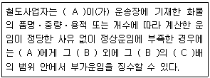
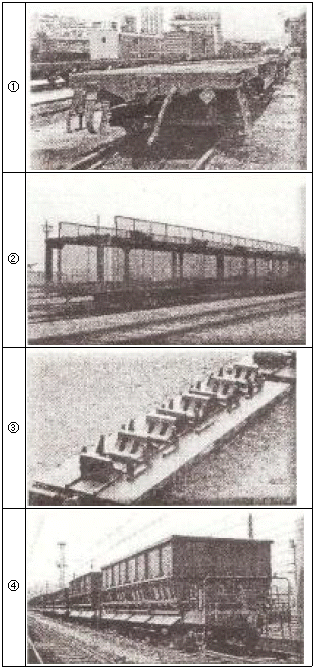
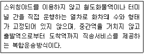

철도운송산업기사 (2008-09-07 기출문제)
1과목: 여객운송
1. 미승차확인증명에 대한 설명으로 맞는 것은?
- 승차권을 반환시는 도착역에서만 수수료 30%를 공제한 잔액을 반환한다.
- 미승차확인증명은 열차내에서 좌석지정승차권을 이중으로 구입하였을 경우 발행한다.
- 승차일로부터 1년 이내에 해당승차권을 제출하고 반환을 청구 할 수 있다.
- KTX 자유석승차권을 이중으로 구입하였을 경우 열차 내에서 미승차확인증명의 발행을 청구할 수 있다.
(정답률: 알수없음)

2. 철도여객운송약관에 정한 내용에 대한 설명으로 틀린 것은?
- 환승이라 함은 연속되는 승차구간의 도중역에 도착한 시각의 10분내지 50분이내에 다른 열차로 갈아타는 것을 말한다.
- 기준운임을 할인하거나 취소⋅반환수수료 등을 계산할 때 발생하는 100원 미만의 금액에 대하여 50원까지는 버리고 51원 이상은 100원으로 한다.
- 정기승차권 이용자는 정기승차권을 역에 제시하고 1일 2회까지 승차 7일 전부터 좌석지정권의 발행을 청구할 수 있다.
- Korail Membership 카드로 제공받은 포인트는 제공받은 월을 기준으로 5년간 유효하며 5년이 경과한 포인트는 월 단위로 매월말 자동소멸된다.
(정답률: 알수없음)
3. 정기승차권에 대한 설명으로 틀린 것은?
- 정기승차권 이용계약 해지시에는 승차구간의 기준운임과 청구 전일까지의 사용횟수를 곱한 금액 및 최저수수료를 공제한 잔액을 반환한다.
- 무궁화호 정기승차권 이용자가 승차한 열차가 정기승차권에 표시된 도착역에 40분이상 지연도착할 경우 철도공사는 정기승차권 지연확인증을 교부한다.
- 유효기간이 남아 있는 정기승차권을 분실한 경우 1회에 한하여 정기승차권의 재발행을 청구할 수 있다.
- “사용횟수”라 함은 정기승차권의 유효기간 중에서 토⋅일⋅공휴일을 제외한 일수를 기준으로 1일 2회로 계산한 횟수를 말한다.
(정답률: 알수없음)
4. 「도시철도운임조정위원회」의 민간위원의 수는?
- 전체위원의 1/4 이상
- 전체위원의 1/3 이상
- 전체위원의 1/2 이상
- 전체위원의 2/3 이상
(정답률: 알수없음)
5. 철도안전법상 여객열차 안에서의 금지행위로 해당하지 않는 것은?
- 정당한 사유 없이 국토해양부령이 정하는 여객출입금지 장소에 출입하는 행위
- 정당한 사유없이 운행중에 비상정지 버튼을 누르는 행위
- 철도차량의 측면에 있는 승강용 출입물을 여는 등 철도차량의 장치 또는 기구 등을 조작하는 행위
- 여객열차밖에 있는 사람에게 위험을 끼칠 염려가 있는 물건을 소지하는 행위
(정답률: 알수없음)
6. 철도여객운송약관에서 열차고장, 파업 및 기타 노사분규 등으로 열차를 정상적으로 운행할 수 없는 경우에 승차권에 대한 제한 또는 조정 내용으로 타당하지 않는 것은?
- 예약
- 발권
- 반환
- 변경
(정답률: 알수없음)
7. 철도운송계약중 당사자 사이의 의사표시가 합치하기만 하면 계약이 성립하고 그 밖의 다른 형식이나 절차를 필요로 하지 않는 계약은?
- 낙성계약(諾成契約)
- 무상계약(無償契約)
- 쌍무계약(雙務契約)
- 부종계약(附從契約)
(정답률: 알수없음)
8. KR PASS 및 KR PASS 교환권에 대한 설명으로 맞는 것은?
- KR PASS VOUCHER는 결제일로부터 60일 이내에 역에서 KR PASS로 교환하여야 한다.
- KR PASS를 사용하는 여객은 KTX을 포함한 모든 열차(수도원전철 및 관광열차 포함)의 일반실을 횟수에 제한없이 좌석지정 승차권을 교부받아 이용할 수 있다.
- KR PASS 교환권은 판매가격은 사용기간별, 연령별로 구분하여 KR PASS SAVER 경우 동행 중 어린이, 청소년이 포함된 경우라도 모두 어른 운임을 받는다.
- KR PASS(KR PASS 교환권 포함)는 사용기간에 따라 3일권, 5일권, 7일권, 10일권, 15일권으로 구분한다.
(정답률: 알수없음)
9. 승차권 반환 및 예약승차권 취소에 대한 설명으로 틀린 것은?
- 자가발권승차권은 출발시각 1시간 전까지 인터넷을 이용하여 반환을 청구할 수 있다.
- 인터넷으로 취소하는 경우 출발 1시간 전 경과 후부터 출발시각이전까지의 취소수수료는 10%이다.
- 인터넷으로 반환하는 경우 출발시각 20분 경과 후부터 60분 이전까지 반환수수료는 40%이다.
- 역에서 취소하는 경우 출발 1일전부터 출발 1시간 이전까지 취소수수료는 5%이다.
(정답률: 알수없음)
10. 승차권을 예약한 사람이 예약한 승차권을 출발시각이전까지 발권받지 않는 경우 취소수수료로 맞는 것은?
- 최저수수료
- 5%
- 10%
- 15%
(정답률: 알수없음)
11. 철도사업자는 대통령령이 정하는 중요한 사항의 사업계획을 변경시에는 국토해양부장관의 인가를 받아야 한다. 다음 사업계획 중 대통령령이 정하는 중요한 사항으로 거리가 먼 것은?
- 여객열차의 운행구간의 변경
- 여객열차의 정차역의 변경
- 여객 또는 화물철도운송서비스의 종류를 변경하거나 다른 종류의 철도 운송서비스를 추가하는 경우
- 사업용철도노선별로 10분의 1이상의 여객, 화물열차의 운행횟수의 변경
(정답률: 알수없음)
12. A역에서 B역간 무궁화호 기준운임이 10,500원인 경우 어른 1명, 노인 1명, 어린이 1명이 열차출발시각 10분 후에 반환 청구시 반환금액은 얼마인가?
- 18,400원
- 18,600원
- 19,500원
- 19,700원
(정답률: 알수없음)
13. 승차권 운임⋅요금의 반환에 대한 설명으로 가장 거리가 먼 것은?
- 운임할인증으로 구입한 승차권 반환시 반환역에서 할인증을 반환 받을 수 있다.
- 할인카드로 구입한 승차권을 반환시 공제한 사용횟수를 다시 조정한다.
- 신용카드로 결제한 승차권은 현금으로 반환하지 아니하며 결제내역을 취소한다.
- 포인트로 결제한 승차권 반환시 수수료를 공제하고 포인트는 자동적으로 회원에게 재적립 된다.
(정답률: 알수없음)
14. A역에서 B역까지 KTX 기준운임이 22,900원인 경우 비즈니스 카드로 어른 3명이 특실승차권을 구입하여 열차출발 30분전에 반환할 경우 반환금액은 얼마인가? (단, 승차일이 공휴일, 좌석속성 배제, 할인카드 기본할인율 적용할 경우)
- 77,400원
- 77,500원
- 82,100원
- 82,200원
(정답률: 알수없음)
15. A역에서 B역까지 KTX 기준운임이 51,200원인 경우 어른 2명, 어린이 2명이 동반석을 구입하여 B역에 기정도착 시각보다 41분 늦게 도착시 지연보상 금액은 얼마인가?
- 16,000원
- 19,200원
- 32,000원
- 38,400원
(정답률: 알수없음)
16. 승차권의 예약⋅발권에 대한 설명으로 틀린 것은?
- 열차출발 7일 전부터 2일 전까지 예약한 승차권은 예약한 날 24:00까지 결제하여야 한다.
- 예약한 승차권은 출발시각 5분 전까지 발권받아야 한다.
- 무임승차권은 승차권판매 대리점에서 발권하지 않는다.
- 열차출발 1일 전부터 출발 1시간 전까지 예약한 승차권은 예약접수시각부터 10분 이내에 결제하여야 한다.
(정답률: 알수없음)
17. 철도여객운송약관에서 정한 용어의 설명으로 틀린 것은?
- 여행시작이라 함은 철도 이용자가 여행을 시작하는 역에서 운임구역에 진입한 때를 말한다.
- 간이역이라 함은 철도공사에서 승차권 발권서비스를 제공하지 않거나 열차 승무원이 승차권을 발권하는 역을 말한다.
- 운임구역이라 함은 승차권 또는 입장권을 소지하고 출입하여야 하는 구역으로 표확인기기 바깥쪽, 타는 곳, 열차내를 말한다.
- 혼용결제라 함은 운임⋅요금 중 일부를 현금, 수표, 신용카드 및 포인트 등으로 나누어 결제하는 것을 말한다.
(정답률: 알수없음)
18. 열차출발시각 몇 분 전까지 타는 곳에 입장하지 않는 경우 운송을 거절할 수 있는가?
- 1분
- 2분
- 3분
- 5분
(정답률: 알수없음)
19. 도시철도가 도시교통 수단으로서 갖는 사회적인 측면에서 본 긍정적인 효과로 가장 거리가 먼 것은?
- 지역간의 접근성을 향상시켜 주변지역의 개발을 촉진시킨다.
- 도시철도 운행 지역의 부동산 가격을 단기간에 상승시켜 지역간 자원배분을 원활히 한다.
- 버스나 승용차에 비해 환경친화적인 도시교통체계를 구축한다.
- 지역간의 이동시간을 단축시켜 넓은 지역을 단일의 생활권역으로 묶어준다.
(정답률: 알수없음)
20. 철도사업법에서 철도사업자의 준수사항으로 정한 내용 중 틀린 것은?
- 철도사업자는 사업계획을 성실하게 이행하여야 한다.
- 철도사업자는 부당한 운송조건을 제시하여서는 아니된다.
- 철도사업자는 정당한 사유 없이 운송계약의 체결을 거부하여서는 아니된다.
- 여객과 화물의 편의를 위하여 철도사업자가 준수하여야 할 사항은 철도사업자의 사규로 정한다.
(정답률: 알수없음)
2과목: 화물운송
21. 철도화물운임제도에 대한 설명으로 적절하지 않는 것은?
- 철도화물운임은 국토해양부장관의 인가사항이다.
- 거리비례제를 따르고 있다.
- 운임은 운송행위에 대하여 그 대가로서 지불되는 반대급부를 말한다.
- 운임결정이론에는 운임가치설, 운송비용설, 절충설 등이 있다.
(정답률: 알수없음)
22. 다음 중 연안해운 운송의 특징이 아닌 것은?
- 국가안보와의 밀접한 관련이 있다.
- 물류비 절감형 운송수단이다.
- 주로 도시지역에 안정적인 생필품을 공급한다.
- 중요 원자재의 안정적 운송수단이다.
(정답률: 알수없음)
23. 컨테이너 철도운송에 대한 설명으로 가장 적절한 것은?
- 피기백(Piggy back)방식은 피기패커(Piggy packer)라는 하역장비가 필요하다.
- 우리나라 컨테이너 운송의 시작은 1960년대 초 부산진역과 용산역간 컨테이너 전용열차가 최초로 운행되면서 시작되었다.
- 컨테이너에 적입된 화물이 운송 중 이동하지 않도록 컨테이너 내에 고정시켜 주는 것을 devaning이라고 한다.
- TOFC방식의 대표적인 예는 플렉시 밴(Flexi-van)이다.
(정답률: 알수없음)
24. 복합운송에 대한 설명으로 적절하지 않는 것은?
- 복합운송은 철도와 자동차 등 2가지 이상의 운송수단을 이용한 운송을 의미한다.
- Fishy-Back방식은 도로운송수단과 해상운송수단을 혼합하여 운송하는 방법이다.
- 화물유통의 신속성 제고⋅운송서류의 간소화⋅노동력 부족의 해소⋅무역확대 촉진 등 경제적 이점이 있다.
- 운송주선인형 복합운송인은 운송수단을 스스로 보유하지 않으면서 다른 운송회사나 서비스를 유기적으로 결합시켜 화주에 대한 책임을 인수하여 운송하는 형태이다.
(정답률: 알수없음)
25. 철도사업법에서 규정하고 있는 화물운송과 관련하여 철도운수종사자의 준수사항이 아닌 것은?
- 정당한 사유없이 여객 또는 화물의 운송을 거부하는 행위를 하여서는 아니 된다.
- 부당한 운임 또는 요금을 요구하거나 받는 행위를 하여서는 아니 된다.
- 운임⋅요금표⋅감면사항 및 철도사업약관을 인터넷 홈페이지에 게시하고 관계 역⋅영업소 및 사업소 등에 비치하여야 한다.
- 정당한 사유없이 화물을 중도에서 내리게 하는 행위를 하여서는 아니 된다.
(정답률: 알수없음)
26. A시 역이 500평방 미터의 화물헛간에 화물을 3일간 유치한 경우 부가가치세를 제외하고 수수해야 할 하차장 사용료는? (단, 일시 사용료 갑지:시지역 220원, 을지:갑지를 제외한 지역 115원일 경우)
- 172,500원
- 172,100원
- 330,000원
- 330,100원
(정답률: 알수없음)
27. 철도화물 운송에 대한 설명으로 가장 적절한 것은?
- 톤단위 화차단위로만 운송한다.
- 복합운송이 주류를 이룬다.
- 전국적인 네트워크를 보유하고 있다.
- 국내 철도화물운송에 대한 수송분담률은 최근 남북철도 연결 및 유가인상 등으로 인하여 가장 높다.
(정답률: 알수없음)
28. A역에서 B역까지 과일류(1개 중량 40kg, 1240개)를 운송하고자 한다. 수수운임은? (단, 거리:220.7km, 임률:42.50원/km, 화차표기하중톤수:50톤, 최저톤수산출비율:100%, 부가가치세 제외)
- 389,000원
- 469,500원
- 469,700원
- 469,600원
(정답률: 알수없음)
29. 철도안전법상 위험물의 운송에 대한 설명으로 틀린 것은?
- 점화, 점폭약류를 붙인 폭약, 니트로글리세린 등은 철도운송금지품목이다.
- 철도로 위험물을 탁송하는 자는 위험물의 안전한 운송을 위하여 철도운영자의 안전조치에 따라야 한다.
- 철도운영자는 대통령령이 정하는 위험물을 철도로 운송하고자 할 때에는 대통령령이 정하는 바에 따라 운송중의 위험방지 및 인명의 안전에 적합하도록 포장, 적재하고 운송하여야 한다.
- 위해물품의 종류, 휴대 또는 적재허가를 받은 경우의 안전조치 등에 관하여 필요한 사항은 국토해양부령으로 정한다.
(정답률: 알수없음)
30. 화물영업지침상 적하시간을 단축 또는 연장시간을 제한할 필요가 있다고 인정할 때에는 누가 이를 지정하여야 하는가?
- 화물취급 계원
- 역장
- 철도공사 사장
- 지사장
(정답률: 알수없음)
31. 다음은 철도사업법에서 규정하고 있는 부가운임 징수에 관한 설명이다. ( )에 들어갈 말로 적절한 것은?

- A : 송하인, B : 정상운임, C : 3
- A : 송하인, B : 부족운임, C : 5
- A : 화주, B : 정상운임, C : 3
- A : 화주, B : 정상운임, C : 5
(정답률: 알수없음)
32. 화물운송 수단별 특성에 대한 설명으로 적절한 것은?
- 운임은 가장 비싸지만 일관운송체계가 확립되어 있는 수송수단은 항공이다.
- 일괄하역이 가능하고 높은 안전성을 유지하면서 기후의 영향을 받지 않는 수송수단은 선박이다.
- 중거리 운송시 유리하고 운임이 탄력적인 교통수단은 철도이다.
- 장거리 운송시 고비용이지만 문전일관수송이 가능한 수송수단은 도로교통수단이다.
(정답률: 알수없음)
33. 장거리, 대량화물의 운송수단으로 철도운송과 연안운송이 적합하다. 다음 중 연안 운송에 대한 설명으로 적절하지 않은 것은?
- 우리나라 철도망은 경부축과 일부 호남축을 중심으로 구축되어 있어 연계운송체계가 미흡하여 도로운송에 비해 경쟁력을 확보하고 있지 못하다.
- 고유가 시대에 연안운송은 다른 운송수단보다 에너지 효율성이 높은 것으로 인식되고 있다.
- 화물의 특성상 기⋅종점이 일정지역에 편중되어 있고, 화물의 출발지와 목적지가 임해지역이거나 항만과 근거리에 위치한 화물을 운송할 경우 연안운송이 유리하다.
- 연안운송은 교통혼잡을 완화할 수 있는 유일한 교통수단이다.
(정답률: 알수없음)
34. 다음 그림은 철도화차 종류를 나타낸 것이다. 화차의 종류를 순서대로 바르게 표현한 것은?

- ①평 평판차 ②컨테이너 겸용차 ③철판코일차 ④자갈차
- ①평 평판차 ②자동차수송차 ③철판코일차 ④홉파형무개차
- ①평 평판차 ②자동차수송차 ③컨테이너차 ④자갈차
- ①날개 평판차 ②침목차 ③철판코일차 ④홉파차
(정답률: 알수없음)
35. 화물운송약관에서 규정하고 있는 철도화물운송에 대한 손해배상 및 책임의 한계에 대한 설명으로 가장 적절한 것은?
- 공사가 화물을 수취한 이후 호송인이 승차한 화물에 대하여도 위험품인 경우 공사에서 책임을 지는 경우가 있다.
- 고객의 책임인 경우 수송도중 환적 및 기타의 비용은 공사가 이를 부담한다.
- 공사가 화물인도기간 만료 후 1월을 경과하여도 화물의 인도를 하지 못한 때에는 고객으로부터의 멸실로 인한 손해배상 청구에 의하여 이를 배상한다.
- 고객이 화물을 인도 받은 다음 날부터 1월 이내에 화물의 일부 멸실 또는 훼손의 사실을 공사에 알리지 아니하면 공사의 책임은 소멸한다.
(정답률: 알수없음)
36. 다음은 TRAIN-SHIP 방식에 대한 설명이다. ( )안에 들어갈 용어로 적절한 것은?
- A : 화물하치장, B : 캥거루방식
- A : 페리부두, B : 피기백방식
- A : 컨테이너 야드, B : 피기백방식
- A : 안벽, B : 캥거루방식
(정답률: 알수없음)
37. 특수평판차의 취급으로 옳지 않은 것은?
- 특수평판차의 속도는 열차운전시행세칙에 규정한 속도를 엄수하여야 한다.
- 특수평판차 대상화차번호는 979991, 979992, 979993호이다.
- 하중 50톤 이상의 화물을 적재시에는 반드시 사전에 승인을 받아야 한다.
- 사유화차의 특수평판차는 하화후 상비역으로 신속히 회송하여야 한다.
(정답률: 알수없음)
38. 철도화물운송약관에서 규정하고 있는 철도화물운임⋅요금의 추가 수수 및 반환방법을 설명한 것으로 적절하지 않은 것은?
- 일반적으로 탁송변경에 응한 경우 이미 수수한 운임요금과의 차액을 추가로 수수하거나 반환한다.
- 고객이 운송열차를 지정한 화물로서 공사의 책임으로 돌아갈 사유로 인하여 지정열차의 도착시각 이후 10시간을 초과하여 도착하였을 경우(다른 열차로 수송하여 이 열차가 지정열차의 도착시각 이후 10시간 이내에 도착하였을 경우에는 제외)에는 열차를 지정하지 아니한 경우에 수수할 운임과 이미 수수한 운임과의 차액을 반환한다.
- 화물의 품명⋅성질⋅중량⋅길이⋅용적⋅개수 기타 운임⋅요금 계산의 기초가 될 사항이 화물운송장의 기재 또는 보내는 고객의 알린 내용과 서로 틀릴 때에는 정당 운임⋅요금과 이미 수수한 운임⋅요금과의 차액을 추가 수수 또는 반환한다.
- 고객에게 책임이 돌아갈 사유로 변경한 경우에는 이미 소요된 요금(예납금을 제외) 또는 비용은 반환하지 아니할 수 있다.
(정답률: 알수없음)
39. 다음은 철도운송의 형태 중 무엇에 대한 설명인가?

- 셔틀트레인
- 바이모달(Bi-Modal)시스템
- 블록트레인
- 로지스틱트레인
(정답률: 알수없음)
40. 내륙컨테이너기지에 대한 설명으로 가장 적절한 것은?
- 우리나라 내륙컨테이너 기지는 경인, 신선대, 자성대, 양산이다.
- 조립 가공 기능을 수행한다.
- ICD는 본래 컨테이너기지를 뜻하는 Inland Container Depot의 의미로 쓰였다.
- 통관⋅포장⋅장치보관 기능 등을 수행한다.
(정답률: 알수없음)
3과목: 열차운전
41. 일반적으로 곡선예고표지는 곡선표지 바깥쪽 몇 미터 이상의 지점에 설치하여야 하는가?
- 200m
- 300m
- 500m
- 600m
(정답률: 알수없음)
42. 열차 출발시의 전호에 대한 설명으로 적절하지 않는 것은?
- 출발전호기의 녹색등은 기관사가 확인하기 쉬운 곳에, 그 스위치는 역장이 취급하기 편리한 곳에 설치하여야 하며 스위치는 필요에 따라 2 이상의 장소에 설치할 수 있다.
- 차장이 무선전화기에 의한 출발전호를 시행하기 곤란한 경우 역장에게 그 사유를 통보하고 출발전호기를 사용할 수 있다.
- 연동폐색식을 시행하는 구간에서 장내신호기의 정지신호에 의하여 정차한 열차가 진행을 지시하는 신호의 현시에 의하여 출발할 때에는 차장의 출발전호를 생략할 수 있다.
- 자동폐색신호기의 정지신호에 의하여 일단 정차 후 출발할 때 또는 일단 정차한 경우 진행을 지시하는 신호에 의하여 출발할 때에는 차장의 출발전호를 생략할 수 있다.
(정답률: 알수없음)
43. 열차의 조성에 관한 설명으로 가장 적절한 것은?
- 차량은 입환의 경우를 포함하여 이를 열차로 하지 않으면 정거장외 본선을 운전할 수 없다.
- 여객열차에 화차를 연결할 경우 객차의 맨 뒷쪽에 연결하여야 한다.
- 시험운전열차를 운전하는 경우 맨 앞에 동력차를 연결하지 않아도 된다.
- 불이 나기 쉬운 화물은 기름종이, 면화, 초산 등을 말한다.
(정답률: 알수없음)
44. 다음 각호의 열차 중에서 지도권을 사용하여야 하는 열차는?
- 폐색구간의 양끝에서 교대로 열차를 구간에 진입시킬 때는 각 열차
- 정거장 외에서 퇴행하는 열차
- 연속하여 4개열차가 동일방향으로 폐색구간에 연속 진입할 때 4번째 열차
- 연속하여 2개열차가 동일방향으로 폐색구간에 진입할 때 첫번째 열차
(정답률: 알수없음)
45. 철도차량운전규칙상 여객열차의 연결제한에 관한 사항으로 잘못된 것은?
- 여객열차에는 화차를 연결할 수 없다. 다만, 회송의 경우와 그 밖에 특별한 경우에는 그러하지 아니하다.
- 회송의 경우와 그 밖의 특별한 경우에는 화차를 객차의 중간에 연결할 수 있다.
- 파손차량, 동력을 사용하지 아니하는 기관차는 여객열차에 연결하여서는 아니 된다.
- 2차량 이상에 무게를 부담시킨 화물을 적재한 화차는 여객열차에 연결하여서는 아니 된다.
(정답률: 알수없음)
46. 열차에 화재가 발생한 경우의 조치로 적절하지 않는 것은?
- 조속히 소화의 조치를 하고 여객을 대피시킨다.
- 화재가 발생한 차량을 다른 차량으로부터 격리시킨다.
- 화재발생 장소가 터널안인 경우는 터널 밖으로 운전하는 것을 원칙으로 한다.
- 지하구간에서 화재가 발생한 경우에는 속히 열차를 정차시키고 여객을 우선 대피시키는 것을 원칙으로 한다.
(정답률: 알수없음)
47. 열차운전도중 제동축 비율이 65로 되었을 때 최고 제한속도로 틀린 것은?
- 통근열차 80km/h
- 무궁화호열차 80km/h
- 화물열차 50km/h
- 수도권전기동차 60km/h
(정답률: 알수없음)
48. 입환에 관한 설명으로 가장 적절한 것은?
- 차량입환시의 제동은 특별한 경우를 제외하고 기관차만의 제동(단독제동)을 사용하는 것으로 한다.
- 입환을 할 때에는 되도록이면 많은 차량으로서 진퇴하고 그 회수를 적게 하도록 유의하여야 한다.
- 입환작업이 완료할 때까지 차량을 일시 유치하는 경우에도 반드시 차량접촉한계표지 안쪽에 유치하여야 한다.
- 입환취급담당직원은 동력차에 연결된 차량의 화물실은 차 및 빈차별, 연결량수, 공기관통상태 등을 감안하여 상황에 따라 42m 미만의 거리에서 미리 속도절제 등의 조치를 하여야 한다.
(정답률: 알수없음)
49. 다음 중 야간에 백색등을 상하로 크게 움직이는 방식으로 시행하는 추진운전전호의 의미로 맞는 것은?
- 전도 지장없음
- 정차하라
- 주의기적을 울려라
- 서행신호의 현시있음
(정답률: 알수없음)
50. 철도안전법상 철도차량을 운전하고자 하는 자는 국토해양부장관으로부터 철도차량운전면허를 받아야 하는데 결격사유로 거리가 먼 것은?
- 20세 미만인 자
- 정신미약자, 알콜중독자
- 운전면허가 효력정지되어 2년이 경과되지 않은 자
- 간질병자, 듣지 못하는 자
(정답률: 알수없음)
51. 차량관리원이 출무하는 정거장에서 입환취급관계직원이 열차 조성 후에 확인하여야 할 사항은?
- 차량의 정비상태
- 연결기의 연결상태
- 전기선의 접속상태
- 공기관호스의 접속상태
(정답률: 알수없음)
52. 자동폐색신호기의 구비조건이 아닌 것은?
- 폐색구간에 열차 또는 차량이 있을 때는 정지신호를 현시할 것
- 장치가 고장이 났을 때는 소등될 것
- 폐색구간에 있는 선로전환기가 정당한 방향에 있지 않을 때는 정지신호를 현시할 것
- 단선운전을 하는 구간의 정거장에서 출발하려고 하는 열차에 진행신호를 현시 하였을 때는 최근 정거장에 있는 반대 방향의 신호기는 정지신호를 현시할 것
(정답률: 알수없음)
53. 철도차량운전규칙상 철도운영자가 열차 또는 차량의 운전제한속도를 따로 정하여 시행하여야 하는 경우로 적절하지 않는 것은?
- 서행신호 현시구간을 운전하는 때
- 총괄제어법에 의하여 열차의 맨 앞에서 제어되는 경우를 제외하고 추진운전을 하는 때
- 지령운전을 하는 때
- 쇄정한 선로전환기를 배향으로 운전하는 때
(정답률: 알수없음)
54. 도시철도운전규칙상 열차를 추진운전 또는 퇴행운전을 하여서는 안되는 경우에 해당하는 것은?
- 선로 또는 열차에 고장이 발생한 경우
- 공사열차 또는 구원열차를 운전하는 경우
- 임시열차를 운전하는 경우
- 구내운전을 하는 경우
(정답률: 알수없음)
55. 운전작업내규의 입환작업 기준설정에 대한 설명으로 적절하지 않는 것은?
- 입환작업에 앞서 관계 타부서와 협의를 해야 할 사항
- 2 이상의 동력차로 입환을 하는 경우 그 작업구역의 범위
- 최대유치 가능차수와 그 9할에 도달할 때 보고 및 조치사항
- 무선입환을 하는 경우 사용채널 지정
(정답률: 알수없음)
56. 상치신호기의 정위로 맞는 것은?
- 유도신호기 : 주의신호 현시
- 원방신호기 : 정지신호 현시
- 복선 자동폐색시행구간의 부본선 장내신호기 : 정지신호 현시
- 반자동 폐색신호기로서 부본선에 소속된 것 : 진행신호 현시
(정답률: 알수없음)
57. 철도안전법상 철도종사자에 해당 되지 않는 경우는?
- 여객을 상대로 승무 및 역무서비스를 제공하는 자
- 철도운영 및 철도시설관리와 관련하여 철도차량의 안전운행 또는 질서유지에 관한 업무에 종사하는 자로서 국토해양부령이 정하는 자
- 철도차량의 운행을 집중제어, 통제, 감시하는 업무에 종사하는 자
- 철도차량의 운전업무에 종사하는 자
(정답률: 알수없음)
58. 유도신호가 현시되었을 때의 최고 운전속도로 맞는 것은?
- 10km/h
- 15km/h
- 25km/h
- 45km/h
(정답률: 알수없음)
59. 열차운전에 관한 설명 중 적절하지 않는 것은?
- 정거장에서 정지위치를 지나서 정차한 열차를 이동시키는 경우 자동폐색구간에서는 열차의 맨 뒤가 출발신호기 또는 이에 상당하는 신호기를 지나서 정차하였을 때 또는 열차가 이동함으로서 그 후방에 있는 신호기의 신호 현시에 변화가 있을 때에는 역장의 지시에 의하여야 하며, 역장은 후속열차에 지장이 없도록 조치하여야 한다.
- 시험운전열차 또는 제설열차를 운전할 때는 퇴행할 수 있으나, 고정편성 열차로서 뒤운전실에서 운전이 가능한 경우가 아닌 열차로서 차장 및 부기관사의 승무를 동시에 생략한 열차의 경우에는 퇴행할 수 없다.
- 기관사가 열차에 이상이 있음을 감지하여 역장에게 알차감시를 요구하는 경우에는 반드시 열차감시를 하여야 한다.
- 열차가 정거장 또는 신호소에 도착, 출발 또는 통과할 때 열차감시를 하는 경우로 동력차에 승무원 1인만 승무하는 열차의 기관사는 앞, 뒷 감시는 생략할 수 있다.
(정답률: 알수없음)
60. 열차가 방호신호의 현시에 의하여 정차하였으나, 정지 수신호의 현시가 없고 선로 기타에 이상 없다고 판단될 때 전방 운전법으로 가장 적절한 것은?
- 전방 1km간은 시속 5km/h 이하의 속도로 전도에 이상이 있을 것을 예측하고 주의운전
- 전방 1km간은 시속 10km/h 이하의 속도로 전도에 이상이 있을 것을 예측하고 주의운전
- 전방 1km간은 시속 15km/h 이하의 속도로 전도에 이상이 있을 것을 예측하고 주의운전
- 전방 1km간은 시속 25km/h 이하의 속도로 전도에 이상이 있을 것을 예측하고 주의운전
(정답률: 알수없음)